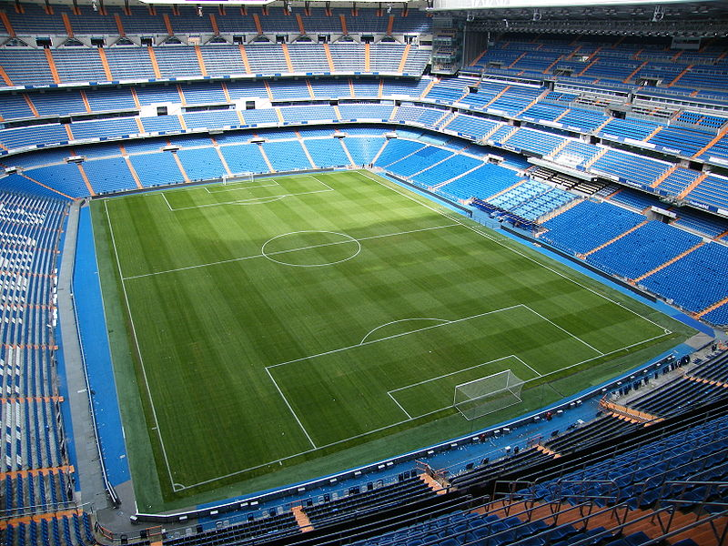

Real Madrid FC

Nama Kelompok : Galatikos
Nama : Heri Putra Bangun
NIM : 121113649
Nama : Muhammad Khairil Adha
NIM : 121112635
Nama : Khairuddin Anwar Hasibuan
NIM : 121113649
Nama : Muhammad Ridwan Lubis
NIM : 121111621
Sejarah Real Madrid
Real Madrid Club de Fútbol (pengucapan bahasa Spanyol: [reˈal maˈðɾið ˈkluβ ðe ˈfutβol]; Royal Madrid Football Club), umumnya dikenal sebagai Real Madrid, adalah klub sepak bola profesional yang berbasis di Madrid, Spanyol.
Didirikan pada tahun 1902 sebagai Madrid Football Club, secara tradisional mengenakan kostum kandang putih. Kata Real ("dari kerajaan") Spanyol dan dianugerahkan ke klub oleh Raja Alfonso XIII pada tahun 1920 bersama-sama dengan mahkota kerajaan di lambang. Tim ini telah memainkan pertandingan kandang dalam 85.454-kapasitas Stadion Santiago Bernabéu di pusat kota Madrid sejak tahun 1947.
Klub ini adalah klub sepak bola terkaya di dunia dalam hal pendapatan, dengan omset tahunan sebesar €513 juta dan paling berharga, senilai €3.3 miliar.[4][5] Ini adalah salah satu dari tiga klub untuk tidak pernah terdegradasi dari papan atas sepak bola Spanyol, bersama dengan Athletic Bilbao dan Barcelona. Real Madrid memiliki banyak persaingan lama, terutama El Clásico dengan Barcelona dan El Derbi madrileño dengan Atlético Madrid.
Klub memantapkan dirinya sebagai kekuatan utama dalam sepak bola Spanyol dan Eropa selama tahun 1950. Di dalam negeri, Klub ini juga merupakan salah satu klub terbaik abad ke-20 menurut FIFA. Mereka telah meraih 32 gelar La Liga, 18 gelar Copa del Rey, 8 Piala Super Spanyol, 1 Copa Eva Duarte, 1 Copa de la Liga,[6] 10 gelar Piala Eropa/Liga Champions UEFA, 2 Piala UEFA, 1 Piala Super UEFA, dan 3 Piala Interkontinental.
Lambang dan Kostum

Santiago Bernabéu Yeste dan kesuksesan di Eropa (1945–1978)
Santiago Bernabéu Yeste terpilih menjadi presiden Real Madrid tahun 1943. Di bawah kepemimpinannya, Real Madrid kemudian berhasil membangun Stadion Santiago Bernabéu dan tempat berlatih klub di Ciudad Deportiva yang sebelumnya sempat rusak akibat Perang Saudara Spanyol. Pada 1953, Bernabeu kemudian mulai membangun tim dengan cara mendatangkan pemain-pemain asing, salah satunya adalah Alfredo Di Stéfano.
Alfredo Di Stéfano, memimpin klub untuk memenangkan lima Piala Eropa berturut-turut (saat ini, Liga Champions). Pada tahun 1955, berdasar dari ide yang diusulkan oleh jurnalis olahraga Perancis dan editor dari L'Equipe, Gabriel Hanot, Bernabéu, Bedrignan, dan Gusztáv Sebes menciptakan sebuah turnamen sepak bola percobaan dengan mengundang klub-klub terbaik dari seluruh daratan Eropa. Turnamen ini kemudian menjadi dasar dari Liga Champions UEFA yang berlangsung saat ini.
Di bawah bimbingan Bernabéu, Real Madrid memantapkan dirinya sebagai kekuatan utama dalam sepak bola, baik di Spanyol maupun di Eropa. Real Madrid memenangkan Piala Eropa lima kali berturut-turut antara tahun 1956 dan 1960, di antaranya kemenangan 7–3 atas klub Jerman, Eintracht Frankfurt pada tahun 1960.[18] Setelah kelima berturut-turut sukses, Real secara permanen diberikan piala asli turnamen dan mendapatkan hak untuk memakai lencana kehormatan UEFA
Quinta del Buitre dan ketujuh Piala Eropa (1980–2000)
Pada awal 1980-an, Real Madrid seperti kehilangan cengkeramannya di La Liga dan mereka membutuhkan waktu beberapa tahun untuk bisa kembali lagi menuju ke atas melalui bantuan beberapa bintang baru. Keberhasilan para bintang baru tersebut kemudian disebut oleh jurnalis olahraga Spanyol sebagai era generasi La Quinta del Buitre ("Lima Burung Nazar"), yang berasal dari nama el buitre ("burung nazar"), julukan yang diberikan kepada salah satu pemain Madrid saat itu, Emilio Butragueño. Anggota lainnya adalah Manuel Sanchís, Rafael Martín Vázquez, Miguel Pardeza, dan Míchel. Dengan La Quinta del Buitre (kemudian berkurang menjadi empat anggota ketika Miguel Pardeza meninggalkan klub dan pindah ke Real Zaragoza pada 1986) dan pemain terkenal seperti penjaga gawang Francisco Buyo, bek kanan Miguel Porlán Chendo, dan penyerang Meksiko Hugo Sanchez, Real Madrid berhasil bangkit dan memiliki kekuatan terbaik di daratan Spanyol dan Eropa pada paruh kedua tahun 1980- an. Hasilnya juga cukup signifikan: mereka berhasil memenangkan dua Piala UEFA, lima gelar Liga Spanyol berturut-turut, satu Piala Spanyol, dan tiga Piala Super Spanyol. Pada awal 1990-an, La Quinta del Buitre resmi berpisah setelah Rafael Martín Vázquez, Emilio Butragueno, dan Míchel meninggalkan klub.
Pada tahun 1996, Presiden Lorenzo Sanz menunjuk Fabio Capello sebagai pelatih. Meskipun masa jabatannya hanya berlangsung satu musim, Real Madrid berhasil menjadi juara La Liga lewat kontribusi Roberto Carlos, Predrag Mijatović, Davor Šuker, dan Clarence Seedorf yang membantu para pemain lokal seperti Raul Gonzalez, Fernando Hierro, Iván Zamorano, dan Fernando Redondo. Real Madrid kemudian menambah amunisi dengan kedatangan Fernando Morientes pada tahun 1997. Penantian mereka selama 32 tahun untuk bisa berjaya lagi di Eropa akhirnya berakhir pada tahun 1998 di bawah manajer Jupp Heynckes saat berhasil lolos ke Final Liga Champions UEFA dan mengalahkan Juventus dengan skor 1–0 berkat gol dari Predrag Mijatović.
Era Los Galácticos (2000–2006)
Pada bulan Juli 2000, Florentino Pérez terpilih sebagai presiden klub.Dia berjanji dalam kampanyenya untuk menghapus utang klub sebesar 270 juta euro dan memodernisasi fasilitas klub. Namun, janji pemilu utama yang mendorong Pérez untuk kemenangan adalah penandatanganan Luís Figo. Tahun berikutnya, klub mendapat tempat pelatihan yang rezoned dan menggunakan uang itu untuk memulai perakitan sisi Galáctico terkenal termasuk pemain seperti Zinedine Zidane, Ronaldo, Luís Figo, Roberto Carlos, Raúl, Fabio Cannavaro dan David Beckham. Hal ini diperdebatkan apakah berjudi terbayar, karena meskipun Liga Champions UEFA dan Piala Interkontinental menang pada tahun 2002, diikuti oleh Liga pada tahun 2003, klub gagal memenangkan trofi besar selama tiga musim berikutnya. Pada musim panas 2003, setelah menangkap lain gelar La Liga, Florentino Pérez dan dewan direksi menolak untuk memperpanjang kontrak pelatih Vicente del Bosque dan setelah perselisihan internal yang memaksa kapten Fernando Hierro meninggalkan klub.
Musim 2005-06 dimulai dengan janji beberapa pemain baru - Julio Baptista (€20 Juta), Robinho (€30 Juta) dan Sergio Ramos (€30 Juta - Melepas Klausul) - tetapi pelatih asal Portugal itu tidak dapat menemukan formula yang tepat di lapangan sebagai bentuk miskin Real Madrid melanjutkan, dengan tim memukul titik terendah setelah kerugian memalukan 0-3 di tangan Barcelona di Santiago Bernabéu. Luxemburgo akhirnya akan mengundurkan diri dan penggantinya adalah Juan Ramón López Caro, secara resmi manajer Real Madrid Castilla. Sebuah kembali singkat untuk membentuk datang tiba berhenti setelah kalah dalam leg pertama perempat final Copa del Rey, 6-1 untuk Real Zaragoza. Tak lama setelah itu, Real Madrid tersingkir dari Liga Champions untuk musim keempat berturut-turut, kali ini di tangan Arsenal. Pada tanggal 27 Februari 2006, Florentino Pérez mengundurkan diri.
El Clásico
Dalam sebuah liga nasional di suatu negara, sering terdapat persaingan sengit antara dua tim terkuat, dan ini terutama terjadi di La Liga, di mana pertandingan antara Real Madrid dan Barcelona dikenal sebagai "Pertemuan Klasik" (El Clásico). Sejak awal kompetisi nasional dimulai, kedua klub sering dipandang sebagai pencerminan/wakil dari dua daerah berbeda di Spanyol: Catalunya dan Castilla, serta dari dua kota. Persaingan ini mencerminkan berbagai hal, termasuk ketegangan politik dan budaya antara Catalunya dan Castilla yang merupakan gambaran umum dari Perang Saudara Spanyol.
Selama era kediktatoran Miguel Primo de Rivera dan terutama Francisco Franco (1939—1975), semua budaya regional ditekan. Semua bahasa daerah yang dipakai di wilayah Spanyol, kecuali bahasa Spanyol (Castilla), secara resmi dilarang. Simbolisasi keinginan rakyat untuk kebebasan Catalunya membuat Barcelona menjadi "lebih dari sekadar klub sepak bola" (més que un club) untuk masyarakat Catalan. Menurut Manuel Vázquez Montalbán, cara terbaik untuk orang Catalan untuk menunjukkan identitas mereka adalah dengan bergabung dengan Barcelona. Hal ini lebih kecil risikonya daripada bergabung dengan gerakan anti-Franco, dan memungkinkan mereka untuk mengekspresikan ketidakpuasan mereka.
Selama tahun 1950, persaingan tersebut memburuk saat ada kontroversi seputar transfer Alfredo Di Stéfano, yang akhirnya bermain untuk Real Madrid dan merupakan kunci kesuksesan mereka berikutnya. Pada era 1960-an, kedua klub kemudian bertemu pada Piala Champions lebih dari dua kali dan pada tahun 2002, pertemuan antara klub Eropa dijuluki sebagai "Pertandingan Abad Ini" oleh media Spanyol, dan disaksikan oleh lebih dari 500 juta orang di seluruh dunia.
El Derbi madrileño
Klub tetangga terdekat dari Real Madrid adalah Atletico Madrid yang juga membuat persaingan ketat antara penggemar kedua tim sepak bola dari ibu kota Madrid tersebut. Meskipun Atlético awalnya didirikan oleh tiga mahasiswa Basque pada tahun 1903, mereka kemudian berhasil mendapatkan kekuatan baru pada 1904, seiring bergabungnya para mantan pemain Real Madrid. Ketegangan lebih lanjut datang karena pendukung Real Madrid lebih banyak dari kelas menengah, sementara pendukung Atletico lebih banyak dari kelas buruh dan pekerja. Kedua klub ini kemudian bertemu untuk pertama kalinya pada 21 Februari 1929 dalam pertandingan ketiga La Liga dalam musim tersebut. Pertandingan ini sekaligus juga menandai pertandingan derbi pertama antara dua tim ini. Pada pertandingan tersebut Real Madrid berhasil menang dengan skor 2–1. Dalam beberapa kesempatan selanjutnya, mereka kembali bertemu dalam ajang lain, salah satunya dalam semifinal Piala Champions tahun 1959, di mana Real yang memenangkan pertandingan pertama dengan skor 2–1 di Santiago Bernabéu dan dibalas kemenangan 1–0 Atletico di Metropolitano yang membuat pertandingan harus diulang. Dalam pertandingan ulangan itulah, Real Madrid berhasil menang dengan skor 2–1. Atletico kemudian berhasil melakukan balas dendam dengan dua kali mengalahkan Real Madrid dalam Copa del Generalísimo tahun 1960 dan 1961 saat dilatih oleh mantan pelatih Real Madrid, José Villalonga Llorente. Real Madrid telah memenangkan El Derbi madrileño sebanyak 75 kali.
Antara 1961 dan 1989, ketika Real Madrid mendominasi La Liga, hanya Atletico yang mampu mencuri kesempatan juara pada saat Real lengah. Mereka berhasil memenangkan gelar La Liga pada tahun 1966, 1970, 1973, dan 1977. Pada tahun 1965, Atletico menjadi tim pertama yang mengalahkan Real di Bernabéu dalam kurun waktu delapan tahun. Catatan Real Madrid melawan Atletico pada masa sekarang sangat menguntungkan bagi kubu Real Madrid. Kemenangan mengesankan dalam derbi ini terjadi pada musim 2002—03, ketika Real Madrid merebut gelar La Liga setelah menang dengan skor 0–4 atas Atletico di Stadion Vicente Calderón.
Prestasi
Pada 30 Agustus 2012, Real Madrid telah memenangi 31 kali gelar juara La Liga dan 9 kali juara Piala Eropa/Liga Champions UEFA. Klub ini juga menerima pengharsgaan Klub Terbaik Abad ke-20 menurut FIFA pada 23 Desember 2000. Selain itu, Madrid juga berhasil menerima FIFA Order of Merit pada tahun 2004. Sebagai juara 9 kali Liga Champions, Real Madrid diperkenankan untuk mengenakan lencana kehormatan (badge of honours) pada kaus mereka ketika mereka bertanding pada pertandingan Liga Champions.
Stadion
Nama : Stadion Santiago Bernabéu
Lokasi : Avenida de Concha Espina 1, E28036, Madrid, Spanyol
Just the beginning...
- Edit Jade markup in 'src/index.jade'
- Edit Stylus styles in 'src/styles/main.styl'
- Edit JavaScript in 'src/scripts/main.js'
- Enjoy! :) -@markdalgleish